Resumo da História do Brasil: principais eventos
A História do Brasil pode ser dividida em vários momentos: desde a presença dos indígenas, o descobrimento europeu do território, a colonização, o reinado dos portugueses, além das diversas fases que aconteceram na república, com períodos democráticos e épocas ditatoriais. Acompanhe agora um panorama histórico brasileiro geral com suas nuances e principais acontecimentos.
Início da História do Brasil: indígenas
Embora, por muito tempo, os livros didáticos tenham abordado a História do Brasil a partir do momento em que
os colonizadores portugueses adentram nossas terras, mas é importante que tais paradigmas sejam quebrados.
Afinal, antes mesmo da chegada de europeus, diversas comunidades indígenas desenvolviam suas atividades em
território brasileiro.
Então, a história brasileira inicia-se com o povoamento de indígenas que se organizavam em tribos, com forte
ligação com a natureza. Inclusive, toda a sua alimentação, religião, cultura, arte, comportamentos e
atividades provinham de substratos naturais. Na região Sul, por exemplo, são encontrados sambaquis que
demonstram a presença de humanos no território.
Descobrimento da América
A história do Brasil, então, se conectará com os acontecimentos europeus a partir do momento em que se
iniciam
as Grandes Navegações — quando ocorreu o Descobrimento da América. Nessa ocasião, os portugueses e
espanhóis,
principalmente, se dedicaram à busca de novas terras e materiais preciosos — em um momento de grande
influência
do mercantilismo na Europa.
O primeiro navegador a encontrar territórios novos foi Américo Vespúcio, de onde vem o nome do continente
americano. Posteriormente Cristóvão Colombo e os espanhóis se deparam com as civilizações pré-colombianas.
A colonização da região de Porto Seguro - região onde viviam os índios Tupiniquim - confunde-se com a
própria história do Brasil. O Monte Pascoal foi o primeiro ponto da costa brasileira avistado e o local de
desembarque dos portugueses, em 1500. A catequese dos índios e a efetiva ocupação da área começaram logo
depois, em torno de 1503, quando dois franciscanos iniciaram a construção da primeira igreja do Brasil, no
Outeiro da Glória, possibilitando o aparecimento da primitiva Aldeia de Santa Cruz.
PEDRO ALVARES CABRAL CHEGA AO BRASIL
A esquadra de Pedro Álvares Cabral aportou no sul da Bahia, em 1500, e tomou posse da terra encontrada em
nome de Portugal. A partir de então, foram enviadas algumas expedições exploradoras para combater a presença
de piratas de outras nações europeias em busca de pau-brasil. Duas expedições são muito importantes para a
história: em 1502, a expedição exploradora de Gonçalo Coelho estabeleceu o marco inicial da cidade de
Caravelas; e, em 1526, Cristóvão Jacques comandou a esquadra guarda-costas que fundou uma feitoria onde se
situa, atualmente, o município.
Anos depois, em 1532, Martim Afonso de Souza percorreu parte da costa e do sertão da região e, por meio de
seu irmão Pero Lopes de Souza, enviou a Portugal o resultado de suas observações que contribuíram para
implantação do Sistema de Capitanias Hereditárias. No mesmo local, onde Cristóvão Jacques estabeleceu a
feitoria, foi criada a Vila de Porto Seguro, na foz do rio Buranhém.
Vila de Nossa Senhora
Em 1534, o primeiro donatário da capitania, Pero de Campos Tourinho, mandou fundar a Vila de Nossa Senhora da
Pena (atual Porto Seguro) e a Aldeia de Santo Amaro (próxima ao Arraial da Ajuda), e transferiu a primitiva
Aldeia de Santa Cruz, para sua localização atual. Dentro da velha tradição luso-portuguesa de cidade de dois
andares, Porto Seguro ocupa - com Olinda e Recife - uma posição especial com dois núcleos razoavelmente
afastados, desempenhando funções complementares.
A economia de Porto Seguro fundamentava-se, sobretudo, na extração de pau-brasil e, partir de 1535, cerca de
600 colonos e alguns padres jesuítas que chegaram com Campos Tourinho começaram a se instalar na região. A
capitania que dependia, até então, da extração e comércio do pau-brasil, começou a diversificar sua economia
com a organização das entradas e bandeiras em busca de pedras preciosas e instalação de engenhos de açúcar.
Fracasso das Capitanias
Tourinho foi preso e destituído da donataria, em 1546, sob acusação de heresia contra a Igreja Católica.
Somente em 1549, Fernão de Campos Tourinho, seu filho, tomou posse da capitania. Nesse mesmo ano, os
jesuítas fundaram residências como a de Salvador e a de São Mateus, ambas em Porto Seguro. Seguiu-se um
período marcado por desordem entre os colonos e ataques dos índios Aimoré. Em 1553, os Aimoré incendiaram a
Vila de Nossa Senhora da Pena, queimando quase tudo. Após a morte de Tourinho, Leonor de Campos Tourinho(sua
irmã) vendeu a capitania a D. João de Lencastro, primeiro Duque de Aveiro e, com a morte do duque, em1571,
seu filho D. Pedro Dinis assumiu a capitania.
Fernão Cardim, que passou por Porto Seguro em 1583, descreveu aquela vila como pequena e pobre. Em 1602,
estava praticamente despovoada e os moradores apelavam ao governo português pelo retorno definitivo dos
jesuítas e reestabelecimento da antiga residência, que foi reaberta pelos padres Mateus de Aguiar e Gabriel
de Miranda, em 1622. Do início do século XVII a meados do XVIII, a vida econômica e social da Capitania de
Porto Seguro esteve em crise, passou de herdeiro a herdeiro sem, praticamente, nenhum desenvolvimento.
Tamanho fracasso foi atribuído ao Sistema de Capitanias Hereditárias e, para reverter a situação, criou-se
um sistema de Governo Geral, com sede na Bahia. Com essa política inaugurada pelo futuro Marquês de Pombal,
em Portugal, foram tomadas as seguintes providências: a expulsão dos jesuítas, em 1760; em 1761, a capitania
foi incorporada à Coroa Portuguesa; e, em 1763, ocorreu a criação de novas vilas, a abertura de estradas e a
reconstrução de edifícios públicos e religiosos.

Porto Seguro
Em 20 de outubro de 1795, foi criado o distrito de Porto Seguro, Após a incorporação da Capitania à Coroa
Portuguesa, foram realizadas muitas obras na Cidade Alta, o que reforçou seu prestígio, como a construção da
Casa de Câmara e Cadeia, da Igreja Matriz, e a restauração da Igreja da Misericórdia. Os dois núcleos de
Porto Seguro surgiram praticamente ao mesmo tempo, mas a parte alta - sede do poder político e ocupada pelas
camadas sociais mais altas - manteve sua hegemonia até meados do século XIX, quando a situação se
inverteu.
(foto atual)
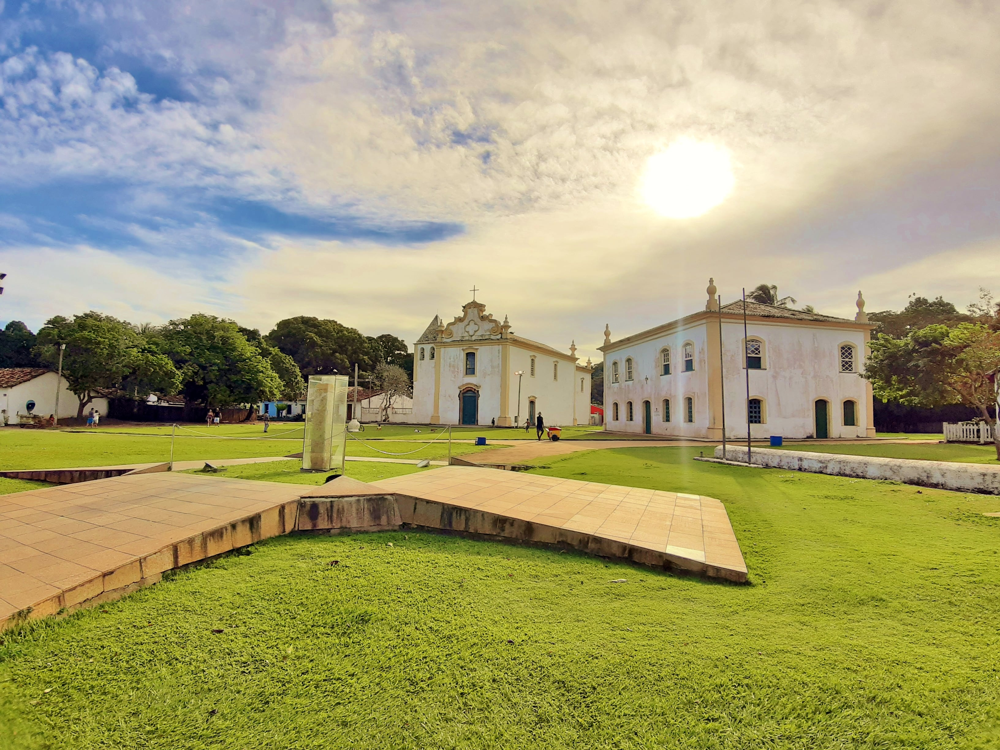
Em 1802, o inglês Thomas Lindley foi preso por tentar contrabandear pau-brasil, ouro e diamantes e, em suas
memórias, relatou a situação de pobreza da cidade: existiam 500 barcos cobertos que pescavam garoupas em
Abrolhos (ilha no litoral do atual município de Caravelas), salgando-as e enviando-as para Salvador. Em
1891, a vila foi elevada à categoria de cidade. No século XX, com a conclusão da rodovia BR-101 em 1972,
Porto Seguro converteu-se em um importante centro turístico.
PORTO SEGURO HOJE
Porto seguro se tornou uma das cidades mais procuradas e consequentimente mais visitadas do brasil, todos os
anos Porto Seguro fica entre as cidades que recebe mais turistas do país.
Além de sua historia Porto
Seguro conta com pontos turísticos como nem um outro lugar do Brasil, a cidade histórica faz parte dos
lugares mais visitados de porto seguro.


Praias e locais turísticos
MEMORIAL DA EPOPEIA DO DESCOBRIMENTO - A rota do Memorial da Epopeia do Descobrimento é grande, pois
não se trata apenas do solo onde os portugueses colocaram seus pés pela primeira vez, mas sim do primeiro
local
onde exploraram e fizeram mudanças.
O local é com certeza agradável, mostrando exatamente como eram as caravelas antigas.
Você pode descer pela escadaria em espiral, que é uma das principais características do navio português
Dentro do navio do Memorial da Epopeia do Descobrimento há objetos e ferramentas importantes para a
navegação. Contém sacos de areia e canhões.
Você pode ainda conhecer os quartos, com as camas e os diversos tipos de utensílio que os marinheiros
utilizavam em seu dia a dia.
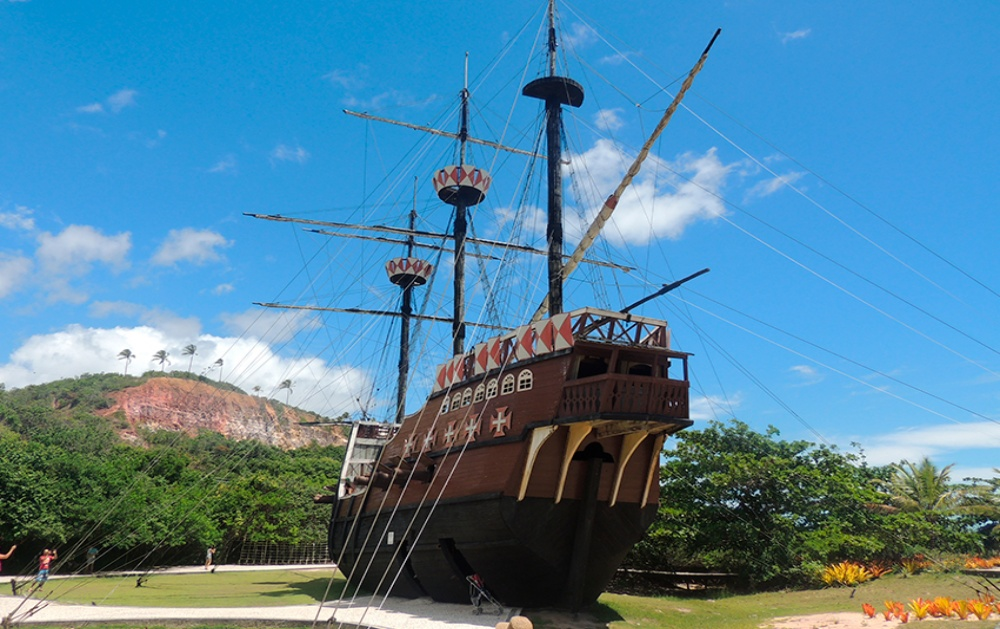
Passarela do Descobrimento- Antiga passarela do Alcool é um do pricipais pontos de concentração de
turistas e comercio local e estrangeiro da cidade, fica localizada no centro da cidade beira mar.
Bares
e restaurantes são algumas das inúmeras opções de atendimento da passarela, shoppings, fontes e música ao
vivo é mais algumas atrações pra o turista aproveitar.
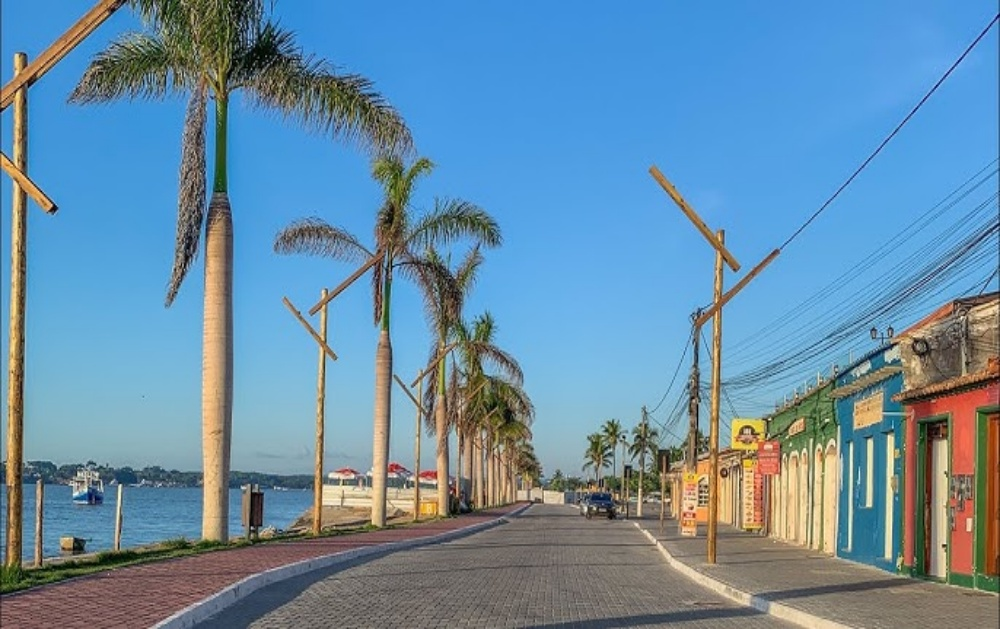

Ainda na passarela
do descobrimento você tem acesso a inúmeras barracas de moradores locais onde o comercio é aquecido com a
venda de alimentos, artesanatos, confecções entre outras opções.
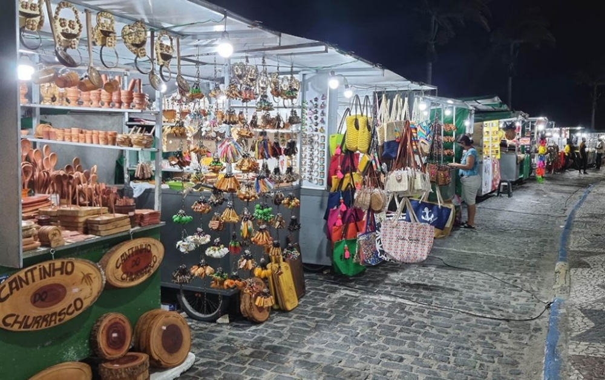
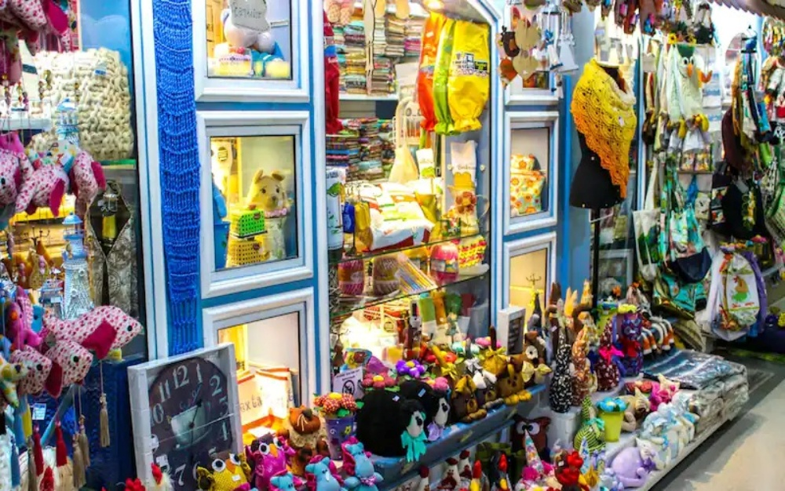
Praias e Distritos
Porto seguro tem 4 distritos sendo eles:
Arraial d'Ajuda,
Caraíva,
Trancoso e
Vale Verde.
Sendo todos eles lugres muito frequentados por turistas de todo país e do mundo.
As praias com certeza são o local mais frequentado pelos turistas segue algumas fotos da praias de porto
seguro e seus distritos.
- PORTO SEGURO - Praia de Taperapuan

- ARRIAL D'JUDA - Praia do Mucugê 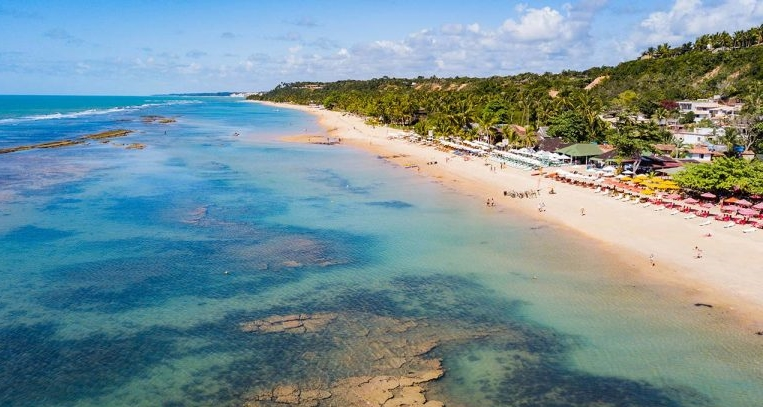
- TRANCOSO - praia do Espelho 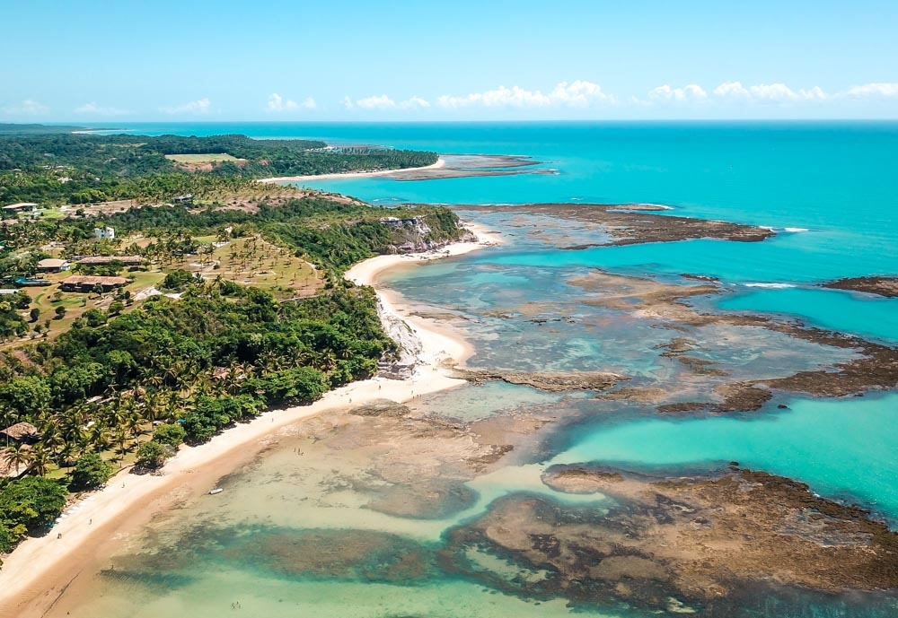
- CARAÍVA -Praia da Barra 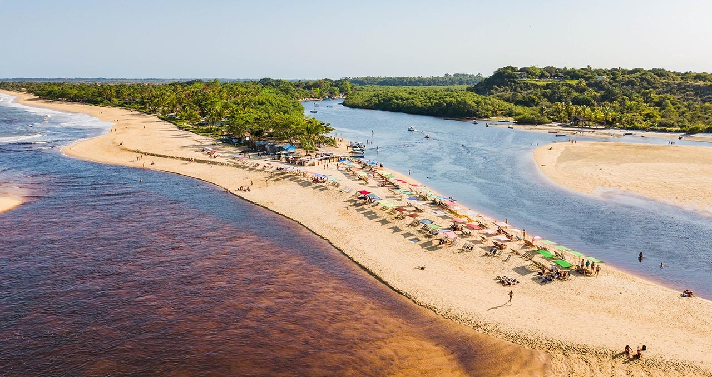
- VALE VERDE -

Comercio local e estrangeiro
Nos últimos anos a economia de porto seguro tem crescido bastante,
Como um local famoso Porto tem seu comercio aquecido pelo turismo, com grandes pousadas, hotéis e resorts de
redes nacionais e internacionais, isso deve-se pela procura incessante de pessoas querendo conhecer a
historia do brasil e suas origens, sem contar a beleza e tudo que porto seguro e seus distritos tem a
oferecer.
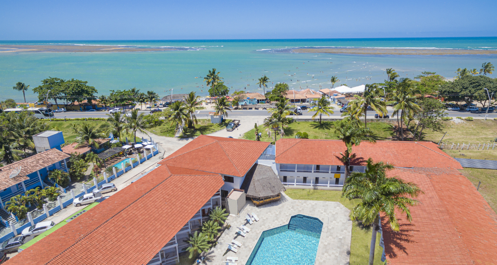
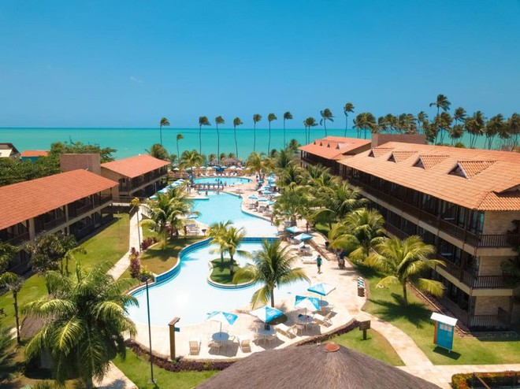
Mas nem só de hotéis e turistas vive porto seguro, a região tem uma anbutande variedade de vida marinha o
que faz a PESCA ser um comercio muito vivo na cidade, desde barcos menores a embarcações maiores a região é
muito bem explorada pelos pescadores o que faz o comercio no seguimento ser muito forte.
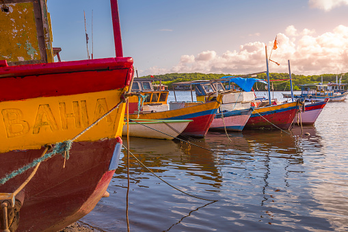
Espero que você leitor tenha gostado dessa viagem ao tempo, mesmo que resumida meu objetivo é levar você a origem de todos nós brasileiros, sites de confiança foram usados para tirar a maioria das informações e imagens, desse lugar que é o coração do Brasil. OBRIGADA POR CHEGAR ATÉ AQUI !